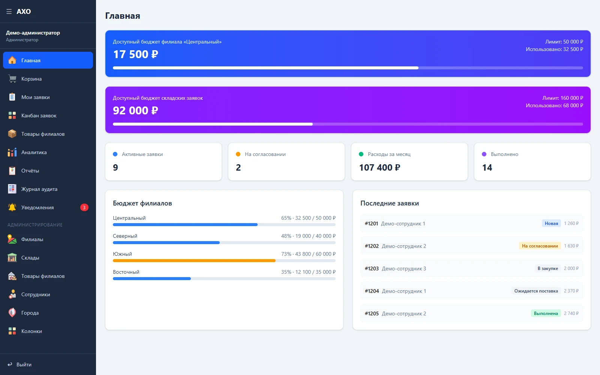

Выбрать
Найти товар в каталоге или добавить собственную позицию.
От заявки сотрудника до поставки и отчёта.
Единая система для филиалов, складов и закупщиков.

Для административно-хозяйственного обеспечения важно видеть всю цепочку: кто и что заказал, какое подразделение оплачивает закупку, кто согласует заявку и на каком этапе поставка.
В АХО мы объединили каталоги товаров, заявки, бюджетные лимиты, работу закупщика и отчётность. Права доступа определяют, какие действия доступны каждому сотруднику.
Найти товар в каталоге или добавить собственную позицию.
Указать количество, параметры заявки и подразделение.
Согласовать заявку, организовать закупку и указать поставку.
Посмотреть статусы, расходы, бюджет и историю действий.
Сотрудник добавляет свою позицию прямо в корзине: название, артикул, цену и количество. Она входит в сумму заявки и учитывается в аналитике, но не добавляется в общий справочник товаров.
Посмотреть корзину ↗В составе заявки · отдельно от каталога
Настоящий интерфейс АХО с демонстрационными данными. Названия, суммы и сотрудники на иллюстрациях условные. Нажмите на экран, чтобы рассмотреть детали.
Показан 21 экран
Единая точка входа для сотрудников: доменный логин или email и пароль. После авторизации набор доступных разделов зависит от роли и выданных прав.
Доступные бюджеты филиала и складских заявок, активные закупки, согласования и последние обращения. Сводка помогает понять, что требует внимания, прежде чем открывать отдельные разделы.
Карточки с фотографией, артикулом, категорией, поставщиком, ценой и единицей измерения. Поиск и категории помогают найти позицию; кнопка добавления переносит её в корзину.
Отдельный ассортимент для складских потребностей с тем же понятным карточным интерфейсом. Пользователь видит стоимость, поставщика и артикул до добавления товара в заявку.
В одной форме собраны товары, количества, итоговая стоимость и параметры заявки. Можно добавить свою позицию с названием, артикулом, ценой и количеством: она учитывается в общей сумме, но не засоряет основной каталог.
Личный список обращений с составом заказа, суммой и текущим статусом. Сотрудник возвращается к своей заявке и видит, как продвигается закупка.
Система сообщает о новых заявках, согласовании и изменении статусов. Прочитанные и новые сообщения различаются визуально; уведомления можно отметить прочитанными или очистить.
Рабочая доска закупщика: новые заявки, согласование, закупка, ожидание поставки и завершение. Карточка показывает автора, подразделение, сумму и приоритет; архив можно открыть отдельно.
Подробности открываются поверх доски: состав заказа, стандартные и собственные позиции, суммы и доступные действия. Здесь закупщик работает со статусом, согласованием, отклонением и датой поставки.
Общая сумма закупок, активные заявки и выполненные обращения дополнены диаграммами. Можно сопоставить расходы подразделений, популярные товары и использование лимитов.
Переключение на склады сохраняет привычную структуру аналитики. Расходы и товары показаны отдельно от филиалов, вместе с информацией об общем складском бюджете.
Табличный реестр с фильтрами по статусу, филиалу и датам. Суммы, авторы и даты помогают подготовить выборку для проверки или выгрузить данные в CSV.
Лимит, потраченная сумма, остаток и процент использования собраны по филиалам в одной таблице. Такой формат удобен для регулярной проверки распределения расходов.
История действий с фильтрами по операции, сущности и периоду. Создание заявки, изменение товара или согласование можно найти отдельно от общей ленты событий.
Справочник подразделений с городом, ответственным сотрудником, бюджетным лимитом и статусом. Администратор создаёт филиалы и редактирует параметры существующих записей.
Склады, адреса и ответственные сотрудники собраны в отдельном справочнике. Здесь же отображается общий бюджет складских заявок и задаётся его лимит.
Таблица каталога с артикулами, ценами, единицами измерения и поставщиками. Доступны редактирование товаров, работа с фотографиями и массовый импорт из JSON.
Отдельная административная страница складского ассортимента. Товары, фотографии и импорт управляются по той же логике, что и в филиальном каталоге.
Для сотрудника задаются роль, филиал, статус и разрешения на отдельные функции. Такой подход позволяет разделить действия обычного пользователя, закупщика и администратора.
Города вынесены в отдельный справочник и используются при настройке филиалов. Администратор добавляет и удаляет записи через компактную таблицу.
Отдельный экран показывает названия колонок, связанные статусы и порядок отображения. Он помогает администратору проверить структуру рабочего процесса закупок.
Next.js и React: страницы сотрудника, рабочее место закупщика и административные разделы.
Next.js · React · Tailwind CSSPostgreSQL и Prisma для данных приложения, MinIO для фотографий. Импорт каталогов из JSON и выгрузка отчётов в CSV.
PostgreSQL · Prisma · MinIOДоменная авторизация через LDAP, роли и отдельные разрешения. Уведомления дополняются журналом действий.
LDAP · Роли · АудитКаталог, корзина и история обращений собраны в одном интерфейсе.
Канбан, состав заказа, согласование и дата поставки доступны в рабочем пространстве.
Справочники, лимиты, сотрудники, отчёты и аудит помогают управлять системой.
Обсудим роли, сценарии и первую рабочую версию.